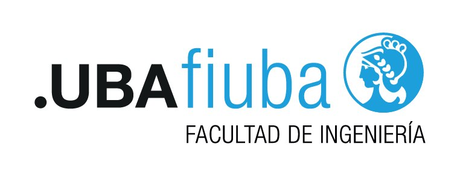

Intro Camejo — Introducción al Desarrollo de Software
Backend
HTTP, cliente-servidor y nuestro primer servidor con Express
Clase Backend — 2C 2026
Intro Camejo

01Agenda
- .01¿Qué es el backend?
- .02Cliente-servidor
- .03HTTP
- .04HTTP en vivo
- .05APIs REST
- .06Nuestro propio servidor
Intro Camejo
02
Sección .01
¿Qué es el backend?
Intro Camejo
03
.01 — ¿Qué es el backend?
Lo que el usuario no ve
- El frontend es la parte del sistema con la que interactúa el usuario: la interfaz (UI, UX, interactividad)
- Casi siempre es visual, pero no siempre: una herramienta de terminal también tiene su frontend
- El backend procesa los datos, aplica la lógica de negocio y arma una respuesta
- No solo responde pedidos: también hace tareas propias (ej. borrar archivos viejos una vez por día)Info
- Dato: se le dice full stack a quien programa las dos partesNota
Intro Camejo
04
.01 — ¿Qué es el backend?
¿Dónde corre cada uno?
Frontend
- En el dispositivo del usuario
- Navegador, app de celular, programa de escritorio
- Su código se descarga en el dispositivo: cualquiera puede verlo con F12 y alterarlo, así que no podemos confiar en lo que envíe
Backend
- En un servidor de la organización (propio o en la nube)
- Un programa que queda corriendo esperando pedidos
- Ahí viven los datos y las reglas de negocio (precios, permisos, stock): el usuario no puede verlas ni saltearlas
Intro Camejo
05
Sección .02
Cliente-servidor
Intro Camejo
06
.02 — Cliente-servidor
Dos actores
- Un actor puede ser cualquier cosa: una persona, un programa, una computadora, una tele
- El cliente quiere algo y se lo pide al servidor
- El servidor recibe el pedido y le responde al cliente
- Normalmente muchos clientes se conectan a un mismo servidorInfo
Intro Camejo
07
.02 — Cliente-servidor
El modelo
Intro Camejo
08
.02 — Cliente-servidor
Ya lo usamos
- Docker: levantamos un servidor de Minecraft y los amigos se conectaban con el juego (el cliente)
- PokeAPI: un servidor en algún lugar del mundo; el cliente era nuestro JS con
fetcho el navegador - De ahora en más, cuando digamos "cliente" hablamos de este cliente, no del de un negocioTip
Intro Camejo
09
.02 — Cliente-servidor
Ser cliente o servidor depende del punto de vista
- Cuando un jugador se conecta, el servidor de Minecraft le pregunta a Microsoft si la cuenta es legítima
- Para los jugadores, el servidor de Minecraft es servidor
- Para el servidor de cuentas, el mismo programa es clienteInfo
Intro Camejo
10
Sección .03
HTTP
Intro Camejo
11
.03 — HTTP
Un protocolo1
- HyperText Transfer Protocol: el mismo "hipertexto" de HTML
- Un protocolo es un conjunto de reglas para que dos actores se entiendan
- Esta clase tiene uno implícito: hablamos en castellano, en voz alta, de a uno por vez. Si empiezo a hablar en japonés, nadie me entiendeTip
- HTTP define cómo son los mensajes que viajan en las flechas del diagrama: de ida y de vuelta
Intro Camejo
12
.03 — HTTP
Un poco de historia1
- Nace junto con HTML en el CERN (1989–1991), de la mano de Tim Berners-Lee
- La idea: compartir documentos científicos por la red. Las primeras versiones eran muy simples
- HTTP/1.1 (1997): texto plano, legible por humanos. Es el que vamos a mirar
1MDN — Evolución del protocolo HTTP
Intro Camejo
13
.03 — HTTP
Request y response
- Hay dos tipos de mensaje: el pedido (request) y la respuesta (response)
- Relación uno a uno: toda request tiene su response, aunque sea un error
- Sin request no hay response: el servidor no le habla al cliente por iniciativa propiaWarning
Intro Camejo
14
.03 — HTTP
Anatomía de una request1
http
GET / HTTP/1.1
Host: developer.mozilla.org
Accept-Language: fr- Primera línea: método, path y versión del protocolo
- Headers: metadata, uno por línea (
Nombre: valor) - Una línea vacía y después, opcionalmente, el body (el contenido)Info
1MDN — Mensajes HTTP
Intro Camejo
15
.03 — HTTP
Los métodos: qué queremos hacer1
- GET → obtener un recurso. Es el más común: el navegador lo usa cada vez que entramos a una página
- POST → crear un recurso nuevo, con los datos en el body
- PUT → reemplazar un recurso completo por el que mandamos
- PATCH → modificar solo algunos campos de un recurso
- DELETE → eliminar un recurso
1MDN — Métodos de petición HTTP
Intro Camejo
16
.03 — HTTP
El path1
- Qué recurso queremos: una página, un archivo, un producto
- Jerárquico, como el filesystem de Linux:
/es la raíz /productos→/productos/ropa→/productos/ropa/campera-animal-print- La estructura la diseña quien arma el servidor; hay convenciones que vamos a ver con RESTNota
1MDN — ¿Qué es una URL?
Intro Camejo
17
.03 — HTTP
Los headers1
- Como la metadata de un archivo (autor, fecha, dueño): información sobre el mensaje, no el contenido
Accept-Language: fr→ "si tenés la página en francés, prefiero esa"- El servidor puede usarlos o ignorarlos: depende 100% de él
- Hay headers estándar, pero también podemos inventar los nuestrosTip
1MDN — Cabeceras HTTP
Intro Camejo
18
.03 — HTTP
Ejemplo: la tienda de Ricky Fort
http
GET /productos/campera-animal-print HTTP/1.1
Host: rickyfortmerch.com.arhttp
POST /productos/campera-animal-print/resenas HTTP/1.1
Host: rickyfortmerch.com.ar
Content-Type: application/json
{ "estrellas": 5, "texto": "Me queda pintada" }- El GET trae la campera con sus reseñas; el POST agrega una reseña nueva, que viaja en el bodyTip
Intro Camejo
19
.03 — HTTP
Anatomía de una response1
http
HTTP/1.1 200 OK
Content-Type: text/html; charset=utf-8
Date: Thu, 29 Oct 2026 19:00:00 GMT
<!doctype html>
<html>...- Primera línea: versión, status code y status message
- Después, igual que la request: headers, línea vacía y body
1MDN — Mensajes HTTP
Intro Camejo
20
.03 — HTTP
Status codes por familia1
- 1xx informativos: respuestas provisionales
- 2xx éxito: la request se procesó correctamente
- 3xx redirección: el recurso está en otra ubicación
- 4xx error del cliente: la request es inválida o no puede atenderse
- 5xx error del servidor: la request era válida, pero el servidor falló al procesarlaWarning
1MDN — Códigos de estado
Intro Camejo
21
.03 — HTTP
Los más frecuentes
- 200 OK: la request se completó con éxito. Es el código más común
- 201 Created: se creó un recurso nuevo (la reseña de la campera)Tip
- 301 / 302: el recurso se movió; el header
Locationindica la nueva ubicación - 404 Not Found: el recurso solicitado no existe
- 500 Internal Server Error: error genérico del servidor (ej. no pudo acceder a la base de datos)
Intro Camejo
22
Sección .04
HTTP en vivo
Intro Camejo
23
.04 — HTTP en vivo
¿Quién arma estos mensajes?
- Depende de qué tan abstraídos estemos, como alto y bajo nivel en programación
- En el navegador, los arma el navegador
- En nuestro código, una biblioteca (
fetch) - En la terminal, curl
- O nosotros, a manoInfo
Intro Camejo
24
.04 — HTTP en vivo
DevTools: pestaña Network
- F12 → Network → recargar la página: cada fila es una request
- Columnas clave: Status, Method, Type, Size y Time
- Filtros: Doc para el HTML y Fetch/XHR para las llamadas a APIs
- Click en una fila: Headers (request y response), Preview/Response (el body) y Timing
- Preserve log conserva el historial al cambiar de página; Disable cache obliga a pedir todo de nuevo
- Click derecho → Copy as cURL: la misma request, lista para pegar en la terminalTip
Intro Camejo
25
.04 — HTTP en vivo
Una página son muchas requests
- El navegador pide el HTML con un GET
- A medida que lo lee, encuentra
<link>,<script>e<img> - Por cada uno arma otra request
- Si ya lo tenía guardado, usa la caché y no lo vuelve a pedirInfo
Intro Camejo
26
.04 — HTTP en vivo
curl: un cliente HTTP en la terminal
terminal
curl google.com # solo el body
curl -v google.com # verbose: request (>) y response (<)
curl -L -v google.com # sigue el Location (L de Location)- Con
-v, las líneas>son lo que mandamos y las<lo que nos responden. Las*las ignoramosInfo google.comresponde 301 haciawww.google.com: curl no lo sigue salvo que le pidamos-L
Intro Camejo
27
.04 — HTTP en vivo
curl: método y headers
terminal
curl -X POST localhost:3000/test # otro método
curl -H "User-Agent: Google Chrome" google.com # header propio-Xcambia el método (por defecto usa GET)-Hagrega o pisa un header
Intro Camejo
28
.04 — HTTP en vivo
HTTP a mano
terminal
nc google.com 80http
GET / HTTP/1.1
Host: www.google.com
Accept: text/plain- Abrimos una conexión con Google en el puerto 80 (el de HTTP) y escribimos el mensaje nosotros. Dos enters y responde
- Si nos salimos del protocolo: 400 Bad Request
- Pedimos
text/plainy nos mandó HTML igual: el header se puede ignorarNota
Intro Camejo
29
.04 — HTTP en vivo
¿Para qué nos sirve todo esto?
- Para debuggear: ¿llegó la request? ¿con qué headers? ¿qué status volvió?
- Va a ser clave cuando armen una API o un front que hable con un servidor
Intro Camejo
30
Sección .05
APIs REST
Intro Camejo
31
.05 — APIs REST
¿Qué es una API?
- API (Application Programming Interface): el contrato que define cómo un programa le pide cosas a otro
- En una API web, ese contrato son requests HTTP: qué paths existen, con qué métodos y qué devuelven
- El cliente suele ser otro programa (nuestro JS con
fetch, una app de celular) y la respuesta son datos, generalmente en JSON, no una página - Ejemplo: la web de la tienda de Ricky Fort pide
GET /productosy con el JSON que recibe arma el catálogoInfo
Intro Camejo
32
.05 — APIs REST
¿Qué es REST?
- REST (Representational State Transfer) es un estilo de arquitectura para diseñar APIs web
- No es un protocolo ni una biblioteca: es un conjunto de convenciones sobre cómo usar HTTP
- Lo propuso Roy Fielding en el año 2000, uno de los autores de la especificación de HTTP
- Una API que respeta estas convenciones se llama RESTfulNota
Intro Camejo
33
.05 — APIs REST
Qué propone REST: recursos y métodos
- Recursos: la API se organiza en torno a cosas (productos, usuarios, reseñas), nombradas con sustantivos
- Cada recurso tiene su URL:
/productoses la colección y/productos/campera-animal-printes un elemento - La acción la indica el método, no el path: GET obtiene, POST crea, PUT y PATCH modifican, DELETE elimina
Intro Camejo
34
.05 — APIs REST
Qué propone REST: respuestas y estado
- El status code dice qué pasó: 201 si se creó, 404 si no existe, 400 si los datos son inválidos
- Sin estado (stateless): cada request trae todo lo necesario; el servidor no recuerda las anteriores
- El recurso viaja en una representación, casi siempre JSON (lo indica el header
Content-Type)Info
Intro Camejo
35
.05 — APIs REST
Colección y elemento
http
GET /productos → lista todos los productos
POST /productos → crea un producto nuevo
GET /productos/campera-animal-print → obtiene ese producto
PUT /productos/campera-animal-print → lo reemplaza completo
PATCH /productos/campera-animal-print → modifica algunos campos
DELETE /productos/campera-animal-print → lo elimina- Con solo dos paths y los métodos cubrimos todo el CRUD: Create, Read, Update, DeleteTip
Intro Camejo
36
.05 — APIs REST
Recursos relacionados y filtros
http
GET /productos/campera-animal-print/resenas → sus reseñas
POST /productos/campera-animal-print/resenas → publica una reseña
GET /productos?categoria=ropa&orden=precio → filtra y ordena- Un recurso que pertenece a otro se anida en el path: la reseña es de un producto
- Los filtros, el orden y la paginación van en la query string (después del
?), no en el path - El POST de la reseña es el mismo que vimos en el ejemplo de la tiendaNota
Intro Camejo
37
.05 — APIs REST
Verbos en el path vs. métodos
No es REST
GET /obtenerProductosPOST /crearProductoPOST /actualizarProducto?id=campera-animal-printGET /borrarProducto?id=campera-animal-print
Es REST
GET /productosPOST /productosPATCH /productos/campera-animal-printDELETE /productos/campera-animal-print
Intro Camejo
38
.05 — APIs REST
Un GET no debe modificar nada
http
GET /borrarProducto?id=campera-animal-print HTTP/1.1
Host: rickyfortmerch.com.ar- GET es un método seguro: por definición solo lee
- Navegadores, buscadores y previsualizaciones de links hacen GET sin que nadie lo pida: si un GET borra, cualquiera de ellos puede borrar el catálogoDanger
- Para eliminar está DELETE:
DELETE /productos/campera-animal-print
Intro Camejo
39
.05 — APIs REST
El status code tiene que decir la verdad
http
HTTP/1.1 200 OK
Content-Type: application/json
{"error": "El producto no existe"}- El body dice que hubo un error, pero el status dice que salió todo bien
fetch, las DevTools y cualquier cliente miran primero el status: van a tratarlo como un éxito- Lo correcto es responder 404 Not Found, con ese mismo body si queremos dar más detalleWarning
Intro Camejo
40
.05 — APIs REST
Todo por POST a un solo endpoint
http
POST /api HTTP/1.1
Host: rickyfortmerch.com.ar
Content-Type: application/json
{"accion": "eliminar", "producto": "campera-animal-print"}- Esto no es REST: la acción viaja escondida en el body y el path es siempre el mismo
- Desde afuera no se puede saber qué hace cada request: las DevTools, los logs y la caché dejan de ser útilesDanger
- Lo correcto es que el método y el path digan la acción:
DELETE /productos/campera-animal-print
Intro Camejo
41
.05 — APIs REST
¿Cuáles son REST?
- 1.
GET /productos/campera-animal-print - 2.
GET /productos/eliminar/campera-animal-print - 3.
POST /productos/campera-animal-print/resenas - 4.
POST /getResenas - 5.
DELETE /productos/campera-animal-print/resenas/7 - 6.
PUT /productos/campera-animal-printque responde200 OKcon{"error": "datos inválidos"}
Intro Camejo
42
.05 — APIs REST
Respuestas
- 1. Sí: obtiene un elemento de la colección
- 2. No: el verbo está en el path y un GET no debe borrar. Lo correcto:
DELETE /productos/campera-animal-print - 3. Sí: crea una reseña dentro del producto
- 4. No: lectura con POST y verbo en el path. Lo correcto:
GET /productos/campera-animal-print/resenas - 5. Sí: elimina la reseña 7 de ese producto
- 6. No: el path y el método están bien, pero el status miente. Lo correcto: 400 Bad Request
Intro Camejo
43
.05 — APIs REST
REST es una convención
- Nada obliga a seguirla: Express (y HTTP) aceptan cualquier path con cualquier método
- Pero vuelve a la API predecible: si conozco
/productos, puedo adivinar cómo funciona/usuarios - Quien la consume aprovecha lo que ya sabe de HTTP: métodos, status codes y headers
- Es la convención que vamos a seguir al armar nuestra propia API con ExpressTip
Intro Camejo
44
Sección .06
Nuestro propio servidor
Intro Camejo
45
.06 — Nuestro propio servidor
¿Con qué lenguaje?
Intro Camejo
46
.06 — Nuestro propio servidor
Arrancar un proyecto
terminal
mkdir api && cd api
npm init -y # como git init, pero para Node
npm install express # agrega una dependencianpmes el administrador de paquetes de Node (las bibliotecas de JS se llaman paquetes)npm initcrea elpackage.json, que marca la raíz del proyecto
Intro Camejo
47
.06 — Nuestro propio servidor
Qué aparece en la carpeta
package.json: nombre, versión,mainy dependencies (express)node_modules/: el código de las dependenciaspackage-lock.json: las versiones exactas que se instalaron- Quien clone el repo corre
npm instally obtiene lo mismoTip node_modules/va al.gitignore: pesa mucho y se regeneraWarning
Intro Camejo
48
.06 — Nuestro propio servidor
Hola mundo
js
const express = require("express");
const app = express();
const port = 3000;
app.get("/", (req, res) => {
res.send("Hello World!\n");
});
app.listen(port, () => {
console.log(`Escuchando en el puerto ${port}`);
});
Intro Camejo
49
.06 — Nuestro propio servidor
Línea por línea
express()crea la aplicaciónapp.get("/", handler)declara una ruta: GET a la raíz. No ejecuta nada en el momento- El handler recibe
req(los datos de la request) yres(donde armamos la response) app.listenabre el puerto y llama a la función cuando ya está escuchando- El programa no termina: se queda esperando requests. Se corta con Ctrl+CInfo
Intro Camejo
50
.06 — Nuestro propio servidor
¿Qué es el puerto?
- Una máquina puede tener muchos servidores a la vez: el puerto identifica a cuál le hablamos
- 80 es el puerto por defecto de HTTP (el que usamos con
nc) y 443 el de HTTPS (HTTP + encriptación) - Por eso
google.comno lleva puerto, perolocalhost:3000sí - Los puertos bajos son privilegiados: para desarrollar usamos 3000, 8000, etc.Tip
- Si el puerto ya está ocupado, el servidor no arranca (
EADDRINUSE)Warning
Intro Camejo
51
.06 — Nuestro propio servidor
Correrlo y probarlo
terminal
node index.js
curl -v localhost:3000- También desde el navegador:
http://localhost:3000
Intro Camejo
52
.06 — Nuestro propio servidor
Reiniciar en cada cambio
- Node lee el archivo una vez al arrancar: si cambiamos el código, hay que reiniciar
- Para no hacerlo a mano: nodemon, que reinicia solo cuando detecta cambios
terminal
npm install --save-dev nodemon # solo para desarrollo
npx nodemon index.js--save-devlo guarda endevDependencies: no hace falta para correr en producciónnpxejecuta un programa que viene dentro de un paquete
Intro Camejo
53
.06 — Nuestro propio servidor
Agregar rutas
js
app.get("/test", (req, res) => {
res.send("test\n");
});
app.post("/test", (req, res) => {
res.send("test creado\n");
});terminal
curl localhost:3000/test
curl -X POST localhost:3000/test- Mismo path y distinto método: son dos endpoints distintosInfo
Intro Camejo
54
.06 — Nuestro propio servidor
Controlar la response
js
app.post("/test", (req, res) => {
res.status(201).set("Hola", "mundo").send("test creado\n");
});res.status()cambia el status code: un POST que crea debería dar 201res.set()agrega un header propio- Con
curl -vvemos el201 Createdy el headerHola: mundoTip
Intro Camejo
55
Bibliografía
- MDN — Generalidades del protocolo HTTP (developer.mozilla.org/es/docs/Web/HTTP/Guides/Overview)
- MDN — Métodos de petición HTTP (developer.mozilla.org/es/docs/Web/HTTP/Reference/Methods)
- MDN — Códigos de estado de respuesta HTTP (developer.mozilla.org/es/docs/Web/HTTP/Reference/Status)
- MDN — REST (developer.mozilla.org/es/docs/Glossary/REST)
- Express — Getting started (expressjs.com/en/starter/installing.html)
- Express — Basic routing (expressjs.com/en/starter/basic-routing.html)
- Node.js — Download (nodejs.org/en/download)
- curl — Manual (curl.se/docs/manual.html)
Intro Camejo
56
Fin de la clase
¡Gracias!
Próxima clase: armamos nuestra propia API
Intro Camejo
57